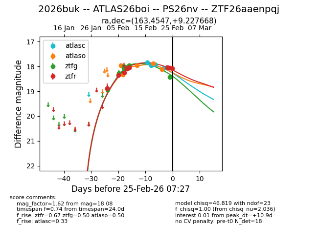
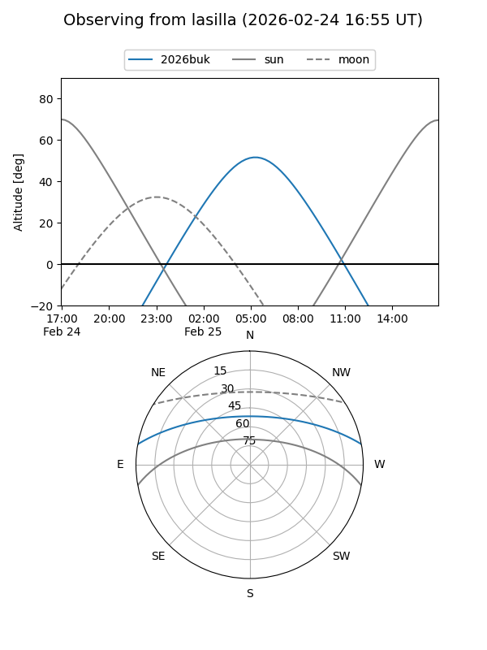
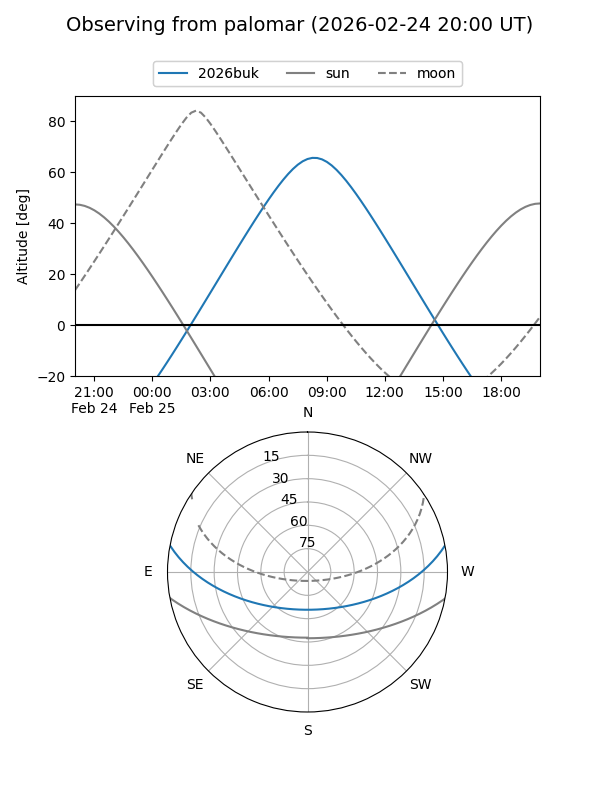
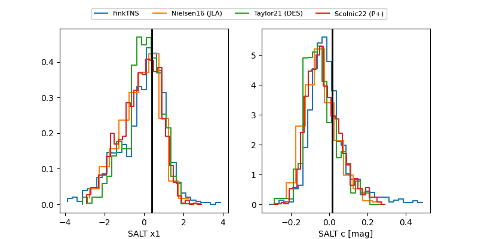

2026buk
Target 2026buk at 2026-02-25 07:28
Aliases and brokers:
FINK: link
Lasair: link
ALeRCE: link
TNS: link
YSE: link
alt names
ZTF26aaenpqj (ztf,fink_ztf)
2026buk (tns,yse)
PS26nv (panstarrs)
ATLAS26boi (atlas)
Coordinates:
equatorial (ra, dec) = 163.4547,+9.22767
equatorial (HMS+DMS) = 10:53:49.12,+09:13:39.60
galactic (l, b) = (240.1619,+56.97367)
Flags:
Photometry:
last atlasc=18.07, atlaso=18.11, ztfg=18.43, ztfr=18.08
4 atlasc, 5 atlaso, 9 ztfg, 10 ztfr detections
Lightcurve

Visibility


Additional plots
